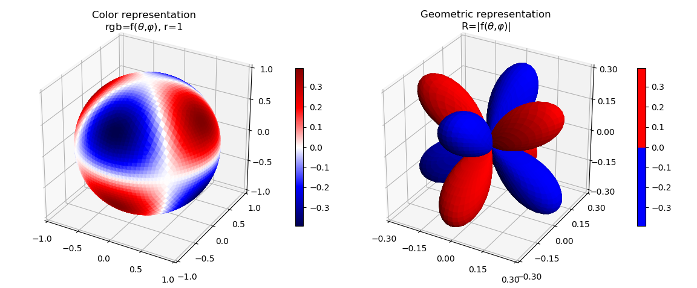
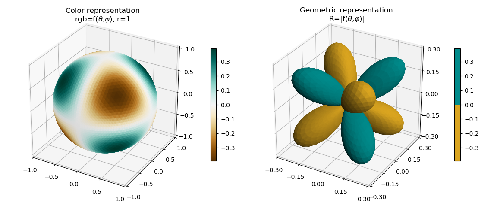
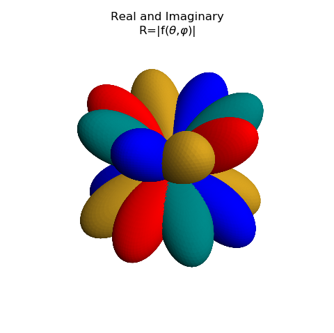
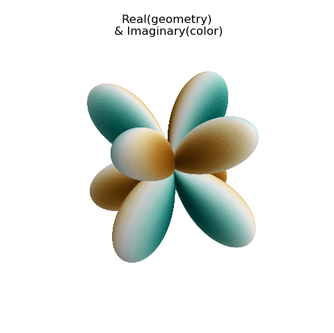

Two methods of Representing f(θ , φ)¶
These are plots of the Spherical Harmonics surface using the special function from the SciPy library. This example demonstrates the object oriented approach to constructing surfaces, as opposed to using the conventional Matplotlib method shown in the Visualizing the spherical harmonics example.
In this example, the functional definition is clearly identified in the code and only two lines of code are needed to define the surface object. Then, one line of code to add the surface to the plot. These lines are highlighted in the code used to construct the plot.
Real Component¶
import numpy as np
from scipy import special as sp
from matplotlib import pyplot as plt
from matplotlib.ticker import LinearLocator, FormatStrFormatter
import s3dlib.surface as s3d
import s3dlib.cmap_utilities as cmu
#.. Two methods of Representing f(θ, φ), Real
# 1. Define functions to examine ....................................
def sphHar(rtp) :
r, theta, phi = rtp
m, l = 2,3
r = sp.sph_harm(m, l, theta, phi).real
return r, theta, phi
def sphHar_absR(rtp) :
r, theta, phi = sphHar(rtp)
return np.abs(r), theta, phi
# 2. Setup and map surfaces .........................................
rez = 5
binmap = cmu.binary_cmap()
sph_23 = s3d.SphericalSurface(rez, basetype='octa', cmap='seismic')
sph_23.map_cmap_from_op( lambda rtp : sphHar(rtp)[0] )
sph_23_pos = s3d.SphericalSurface(rez, basetype='octa', cmap=binmap)
sph_23_pos.map_cmap_from_op( lambda rtp : sphHar(rtp)[0] )
sph_23_pos.map_geom_from_op(sphHar_absR).shade()
# 3. Construct figure, add surfaces, and plot .....................
fig = plt.figure(figsize=plt.figaspect(0.5/1.2))
ax1 = fig.add_subplot(121, projection='3d')
ax2 = fig.add_subplot(122, projection='3d')
ax1.set(xlim=(-1,1), ylim=(-1,1), zlim=(-1,1) )
ax2.set(xlim=(-.3,.3), ylim=(-.3,.3), zlim=(-.3,.3) )
ax1.xaxis.set_major_locator(LinearLocator(5))
ax1.yaxis.set_major_locator(LinearLocator(5))
ax1.zaxis.set_major_locator(LinearLocator(5))
ax2.xaxis.set_major_locator(LinearLocator(5))
ax2.yaxis.set_major_locator(LinearLocator(5))
ax2.zaxis.set_major_locator(LinearLocator(5))
ax1.set_title('Color representation\n'+r'rgb=f($\theta$,$\varphi$), r=1')
ax2.set_title('Geometric representation\n'+r'R=|f($\theta$,$\varphi$)|')
plt.colorbar(sph_23.cBar_ScalarMappable, ax=ax1, shrink=0.6 )
plt.colorbar(sph_23_pos.cBar_ScalarMappable, ax=ax2, shrink=0.6 )
ax1.add_collection3d(sph_23)
ax2.add_collection3d(sph_23_pos)
fig.tight_layout()
plt.show()
Imaginary Component¶
The imaginary component of the value is easily shown by simply changing the function definition and the colors, as shown in the highlighted lines below.
# 1. Define functions to examine ....................................
def sphHar(rtp) :
r, theta, phi = rtp
m, l = 2,3
r = sp.sph_harm(m, l, theta, phi).imag
return r, theta, phi
def sphHar_absR(rtp) :
r, theta, phi = sphHar(rtp)
return np.abs(r), theta, phi
# 2. Setup and map surfaces .........................................
rez = 5
binmap = cmu.binary_cmap('goldenrod','darkcyan',)
sph_23 = s3d.SphericalSurface(rez, basetype='octa', cmap='BrBG')
sph_23.map_cmap_from_op( lambda rtp : sphHar(rtp)[0] ).shade(0.8)
sph_23_pos = s3d.SphericalSurface(rez, basetype='octa', cmap=binmap)
sph_23_pos.map_cmap_from_op( lambda rtp : sphHar(rtp)[0] )
sph_23_pos.map_geom_from_op(sphHar_absR).shade()
Combined Components¶
Both real and imaginary parts can be displayed using the geometric representation by just adding the two surfaces together as one surface, then add the combined surface to the figure.
import numpy as np
from scipy import special as sp
from matplotlib import pyplot as plt
from matplotlib.ticker import LinearLocator, FormatStrFormatter
import s3dlib.surface as s3d
import s3dlib.cmap_utilities as cmu
#.. Two methods of Representing f(θ, φ), real & imaginary (abs values)
# 1. Define functions to examine ....................................
real = True
imaginary = not real
def sphHar(rtp, isReal) :
r, theta, phi = rtp
m, l = 2,3
sph = sp.sph_harm(m, l, theta, phi)
if isReal : r = sph.real
else : r = sph.imag
return r, theta, phi
def sphHar_absR(rtp, isReal) :
r, theta, phi = sphHar(rtp, isReal)
return np.abs(r), theta, phi
# 2. Setup and map surfaces .........................................
rez = 6
binmap = cmu.binary_cmap('goldenrod','darkcyan',)
sph_23_imag = s3d.SphericalSurface(rez, basetype='octa', cmap=binmap)
sph_23_imag.map_cmap_from_op( lambda rtp : sphHar(rtp,imaginary)[0] )
sph_23_imag.map_geom_from_op( lambda rtp : sphHar_absR(rtp,imaginary) ).shade()
sph_23_real = s3d.SphericalSurface(rez, basetype='octa', cmap=cmu.binary_cmap())
sph_23_real.map_cmap_from_op( lambda rtp : sphHar(rtp,real)[0] )
sph_23_real.map_geom_from_op( lambda rtp : sphHar_absR(rtp,real) ).shade()
sph_23_pos = sph_23_real + sph_23_imag
# 3. Construct figure, add surfaces, and plot .....................
fig = plt.figure(figsize=plt.figaspect(1))
ax = fig.add_subplot(111, projection='3d')
ax.set(xlim=(-.3,.3), ylim=(-.3,.3), zlim=(-.3,.3) )
ax.set_title('Real and Imaginary\n'+r'R=|f($\theta$,$\varphi$)|')
ax.set_axis_off()
ax.add_collection3d(sph_23_pos)
fig.tight_layout()
plt.show()
Here, one function definition is used with the additional parameter indicating whether the real or imaginary component of the spherical harmonic function is to be returned.
This is just a demo and only shown as a demonstration of capabilities. This may be visually incomprehensible when multiple surfaces are combined as this figure demonstrates.
By using the real component for the geometry and the imaginary component for color, these may also be combined. This is one of the methods used for Complex Number Representation, Geometry and Colormap example.
For this example, only the surface object was changed as:
# 2. Setup and map surfaces .........................................
rez = 6
binmap = cmu.binary_cmap('goldenrod','darkcyan',)
sph_23_real = s3d.SphericalSurface(rez, basetype='octa', cmap='BrBG')
sph_23_real.map_cmap_from_op( lambda rtp : sphHar(rtp,imaginary)[0] )
sph_23_real.map_geom_from_op( lambda rtp : sphHar_absR(rtp,real) ).shade(0.2)
sph_23_pos = sph_23_real
Again, this is only a demo and leads to a difficult interpretation. In particular, the positive and negative values of the real component are hidden. By separating the real components into two surfaces, as was done with Planar Coordinates example, two different cmaps could be used. But then the imaginary color visualization would get confusing. Bottom line, KISS.